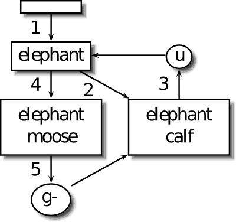

Vim Recipes ‣ Typing ‣ Undoing Mistakes
You've made a mistake while editing and you'd like to revert it. Or, worse, you've made a mistake while reverting a mistake, and you'd like to revert that.
For example, you've just deleted the paragraphs containing, subject to peer review, the cure for cancer. You'd kinda' like to retrieve it, and pretend the whole situation had never occurred.
Use the undo feature. Hit u in Normal mode or :u in Command mode. You can undo all recent changes on the current line with U. To undo multiple times either repeat the command or prefix it with a digit indicating the number of times. For example, to undo the previous change and the one before that: uu.
To redo a change that was undone use <Ctrl>+R or :redo.
You can also jump backwards and forwards through your edits by time. To return to how your file looked 1 hour ago use :earlier 1h, then travel forward 20 minutes with :later 20m.
The undo/redo behaviour described above should be familiar to most users as it mirrors that of many other applications. Vim, however, extends this concept into the idea of undo branches.
Imagine you opened a new file and entered elephant. You then entered calf on a new line and hit u. This undid the addition of calf so now your file just contains the word elephant. Next you entered moose. If you hit u again you'd undo moose and get back to elephant. No matter how many times you do this you'd never get the calf back (which is unacceptable; elephant calves are particularly photogenic) because you made an edit after undoing (by adding moose).
Undo branches to the rescue. Hit g- and your file will now contain elephant then calf. Here are the events represented diagramatically:

Vim implicitly created an undo branch each time you hit u. The branch represents the state of the file before you undid. g- (and g+ to move forwards) moves between these branches.